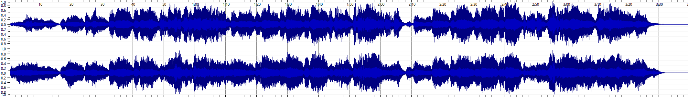
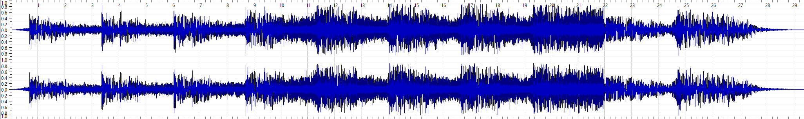
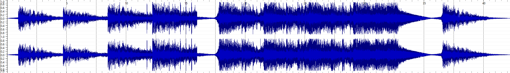
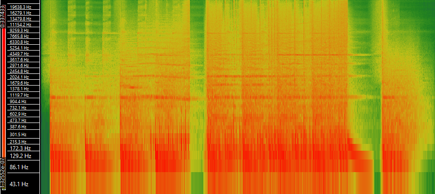

Task 1: Create a Metadata Schema
| Title | Artist | Composer | Copyright Info | Genre | Source | File Format | Number of Channels | Sample Rate | Bits per Second | Duration |
|---|---|---|---|---|---|---|---|---|---|---|
| Schizophrenic Gods | Lisa Hammer | Lisa Hammer | Attribution-ShareAlike 4.0 International | Folk/Goth/Opera/Musical Theatre | Free Music Archive | mp3 | 2 | 44100 Hz | 128281.023 bps | 03:39 |
| Dark Horror Nightmare | ArcSound | ArcSound | Attribution-NonCommercial-NoDerivatives 4.0 International | Soundtrack/Composed Music/Sound Art | Free Music Archive | mp3 | 2 | 44100 Hz | 324000 bps | 00:42 |
| Your Dark Evil Cinematic | ArcSound | ArcSound | Attribution-NonCommercial-NoDerivatives 4.0 International | Soundtrack/Ambient/Composed Music | Free Music Archive | mp3 | 2 | 44100 Hz | 321552 bps | 00:29 |
Task 2: Perform Analysis of Tracks in SonicVisualizer
Track 1: Schizophrenic Gods
Waveform
Spectrogram - Log-spaced Frequency Scale

Track 2: Dark Horror Nightmare
Waveform
Spectrogram - Log-spaced Frequency Scale

Track 3: Your Evil (Dark Cinematic)
Waveform
Spectrogram - Log-spaced Frequency Scale
Advantages of Time-frequency Analysis Over Wave-form Analysis
A wave-form analysis gives an indication of the volume of the music and the rough structure, for example any loud sections or parts where the music fades. However, a wave-form analysis doesn't give any indications of pitch.This is where a time-frequency analysis can come in handy. This gives a better indication of the pitch of notes that are being played as the frequency corresponds to the pitch of the song. If we look at Track 3 - 'Your Evil' as an example, we can see a lot more clearly in the spectrogram the beats of the music. The drum beats are more likely to be shown in lower frequencies. While in the wave-form analysis there is some indication of the beats and fade in volume, the spectrogram gives us additional information about the exact pitches being played. We can see that a lot of the lowest frequencies cut out at several parts in this piece of music, with some of the higher frequencies continuing. The time-frequency analysis can show us how different frequencies in the music work together unlike the wave-form which condences everything.